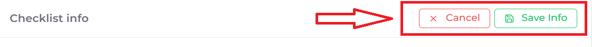
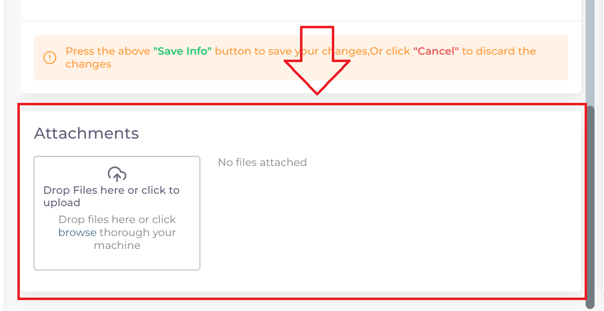

خطوات تقديم معاملة تسجيل موقع تصنيعي جديد
اولا: بدء معاملة جديدة واختيار نوع المعاملة:
من واجهه الحساب الرئيسية نضغط على زر new لغرض بدء معاملة جديدة:

ثم نختار نوع المعاملات المختصة بالمواقع التصنيعية:

ثم نختار نوع المعاملة وهي تسجيل موقع تصنيعي جديد:

ثم نختار تخصص الموقع التصنيعي المراد تسجيله:

ثانيا: ملئ المعلومات الاساسية للموقع التصنيعي وبدء المعاملة:

ملاحظة
اي حقل عليه علامة * هوة حقل اجباري ويجب ملئه للتقدم في المعاملة
واي حقل لا يحوي هذه العلامة او يحوي على كلمة Optional فهوة حقل اختياري يمكن تركه او ملئه ولا يوثر على التقدم في المعاملة
اختيار وقت تدقيق المعاملة حسب اوقات الدوام الرسمي في الوزارة:

ملاحظة
الشفت المسائي: يكون وقت تدقيق المعاملة من ال 8 صباحا الى ال 5 مسائا
الشفت الصباحي: يكون وقت تدقيق المعاملة من 8 صباحا الى ال 2 مسائا
الشفت المسائي يكون اسرع لان وقت التدقيق اليومي اكثر
تكلفة التسجيل للشفت المسائي تكون اكثر من الصباحي
ثم نكتب اسم الموقع التصنيعي:
ملاحظة
حقل ال Name يكتب به اسم الموقع التصنيعي الموجود في الوثائق
اما حقل ال Arabic Name يكتب به اللفظ العربي للاسم
مثلا: اذا كان اسم الشركة في الوثائق هوة astrazeneca فيكتب في حقل ال Name
اما في حقل ال Arabic Name فنكتب استرازنيكا وحسب اللفظ العربي الصحيح
اختيار تخصص الموقع التصنيعي:
اسم الشخص المالك للموقع:

ملاحظة
اذا لم تتوفر هذة المعلومة في ملفات الموقع فيكتب NA في الحقل
ملئ معلومات عنوان الموقع ومعلومات التواصل وسنة التأسيس للموقع التصنيعي:

اختيار طبيعة الموقع التصنيعي

ملاحظة
Manfacture وتعني طبيعة الموقع اذا كان هوة المصنع للمنتج
او تعاقدي Contract manfacture
Manfacture and Contract manfacture او كلاهما
ثم نعود الى بداية الصفحة ونضغط على Create لغرض بدء المعاملة:

فيتم بدء المعاملة كما موضح ادناه:

ملاحظة
الصورة اعلاه هية مثال لموقع تصنيعي دوائي وقد ترى عدة اختلافات لديك في الاسم وعدد القوائم حسب نوع الموقع
ونلاحظ ايضا تغيير حالة المعاملة الى Draft اي انه تم بدء المعاملة لغرض اكمال ملئ المعلومات الباقية

ثالثا: ملئ قوائم متطلبات المعاملة Cheacklist:
بعد بدء المعاملة نرى قسم قوائم المتطلبات Cheacklist على اليمين قد فتح الدخول له

ملاحظة
لكل معاملة عدد محدد من قوائم المتطلبات Cheacklist التي يجب ملئها جميعا قبل ارسال المعاملة
وفي حالة المثال اعلاه عدد القوائم Cheacklist المطلوبة في المعاملة هي 8

ويمكن ملاحظة حالة اي Checklist من خلال الركن العلوي الايمن

وتكون الحالة Empty اي لم يتم ملئ القائمة بعد
تحذير
قبل البدء بملئ اي Cheacklist يجب مراعاة ما يلي:
ملئ الحقول المطلوبة ان وجدت
يجب رفع الملف الخاص في ال Cheacklist بصيغة pdf
يجب ان يكون المف المرفوع مختوما ورسميا
ان يكون الملف المقدم يحوي فقط اوراق الملف المخصصة لل Cheacklist
نضغط على احد القوائم للبدء وتضهر صفحة القائمة :

ملاحظة
يمكننا معرفة ال Cheacklist الحالية من خلال
اسم ال Cheaklist:

او من خلال لون الحد الخارجي للقائمة على اليمين:

نقوم بملئ الحقول المطلوبة:

ثم نقوم بحفظ معلومات الحقول بعد ملئ كل الحقول المطلوبة عن طريق الضغط على زر Save Info:

ملاحظة
في حالة حدوث خطأ في ادخال المعلومات وتم حفظ التقدم فيمكن التعديل على الحقول عن طريق الضغط على Edit:

ثم تغيير الحقول المطلوبة والضغط على Save Info لحفظ التغييرات الجديدة او الضغط على Cancel لتجاهل التغييرات

والان نقوم برفع الملف الخاص بهذة القائمة عن طريق النزول لقسم Attachments في اخر الصفحة :
نقوم بالضغط على ايقونة الرفع واختيار ملف للرفع:

ويضهر الملف بعد رفعه كما موضح ادناه: